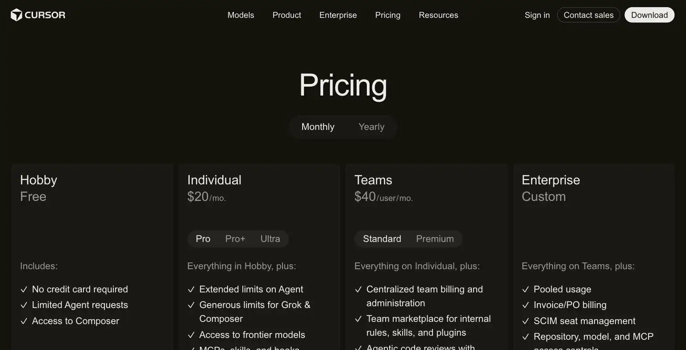
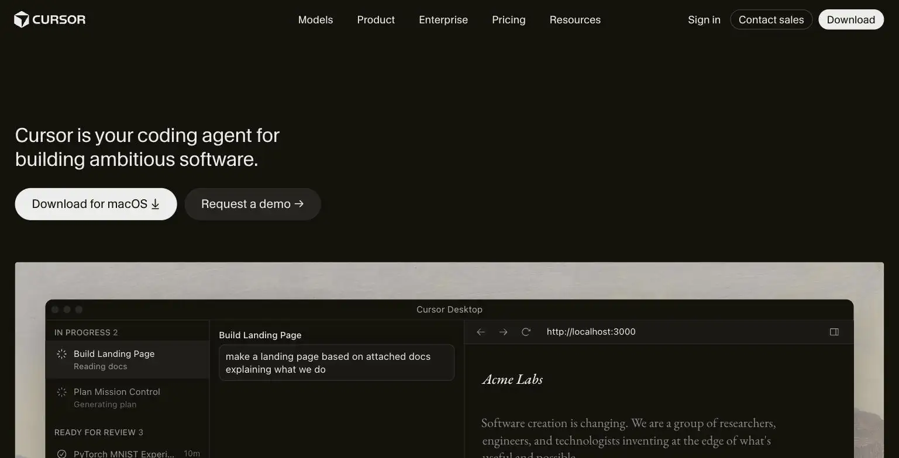

Cursor
Cursor is an AI-native code editor, relevant specifically if you're a solopreneur building your own software product rather than relying entirely on no-code tools. Pricing runs free (Hobby) to $20/month (Pro, or ~$16/month annually), up through $60 and $200/month tiers for heavier usage. The site's verdict is only relevant if you actually write or edit code yourself, for that audience Pro is genuinely worth it, for everyone else this tool has zero relevance.
- Value for price6.5/10
- Capability8/10
- Ease of use5.5/10
- Trial safety6/10

Cursor is a fork of VS Code with AI assistance built directly into the editing experience, not a separate chat window bolted onto a regular editor, letting it suggest, generate, and edit code in context with your actual codebase open in front of it.

Cursor's differentiator against a general AI chatbot is that its suggestions are grounded in your actual open codebase, file structure, and existing patterns, producing code that fits your project rather than generic snippets you have to adapt by hand.
Example from cursor.com. Not independently tested by Solos Gems.Pricing breakdown
- Hobby (Free): Limited AI completions and requests to test the editor
- Pro ($20/mo, ~$16/mo billed annually): 500 fast premium model requests/month, unlimited standard completions, priority response times
- Pro+ ($60/mo): Higher usage limits for heavier daily coding work
- Ultra ($200/mo): Highest individual usage tier
- Teams ($40/user/mo): Team billing and shared settings, not relevant for a true solo user
Who this tool is actually for
Cursor has zero relevance if your solo business runs entirely on no-code tools, Webflow, Airtable, Zapier, and similar. It becomes genuinely valuable the moment you're building or maintaining your own web app, internal tool, or product codebase, where AI-assisted code generation and editing can meaningfully cut development time. This is a narrow-audience tool by design, judge it against that specific use case, not as a general productivity tool.
Pros
- AI suggestions are grounded in your actual codebase, not generic snippets
- Pro tier's request allowance is generous for typical solo development work
- Fork of VS Code means existing extensions and workflows mostly transfer over
Cons
- Requires real coding ability to use effectively, not a no-code substitute
- Steep learning curve if you're not already comfortable in a code editor
- Usage-based limits on Pro can be consumed fast during heavy development sprints